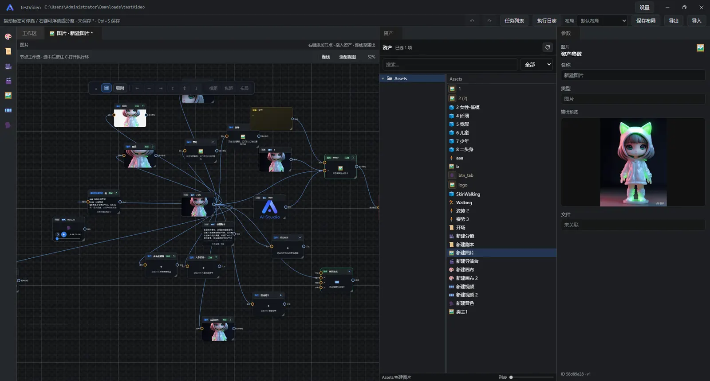
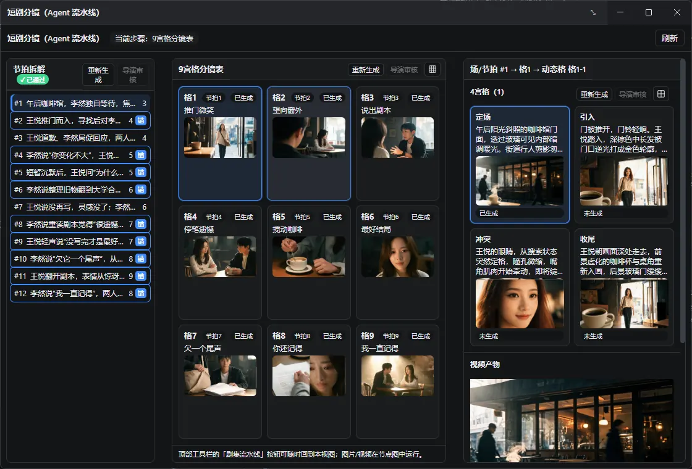
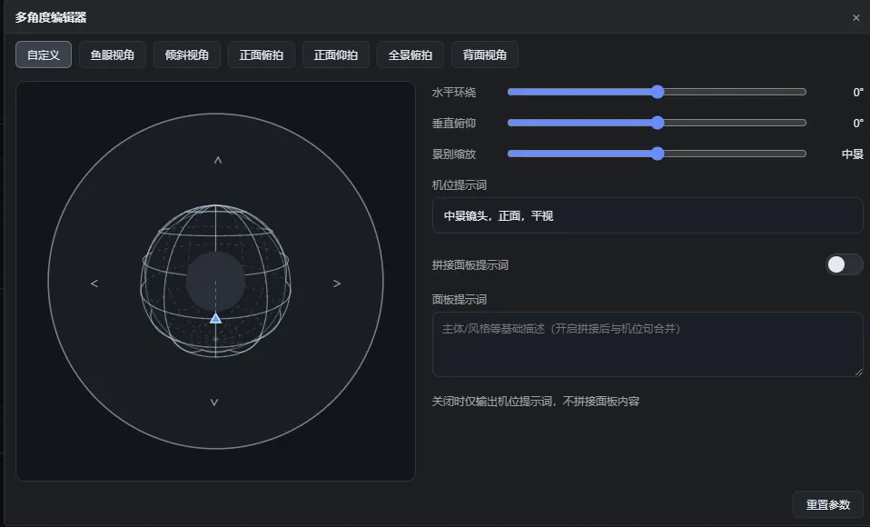
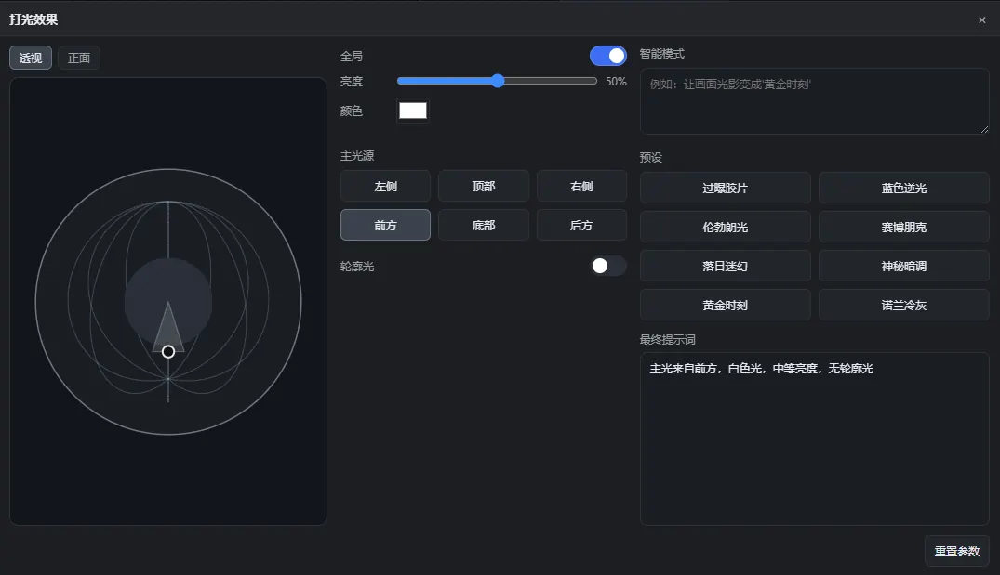
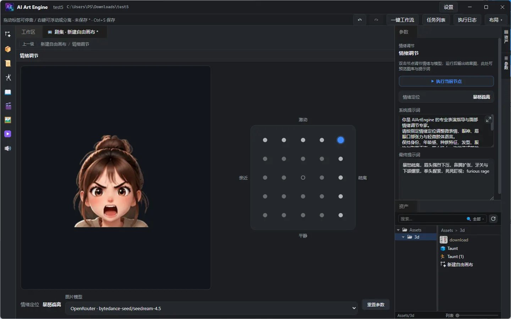
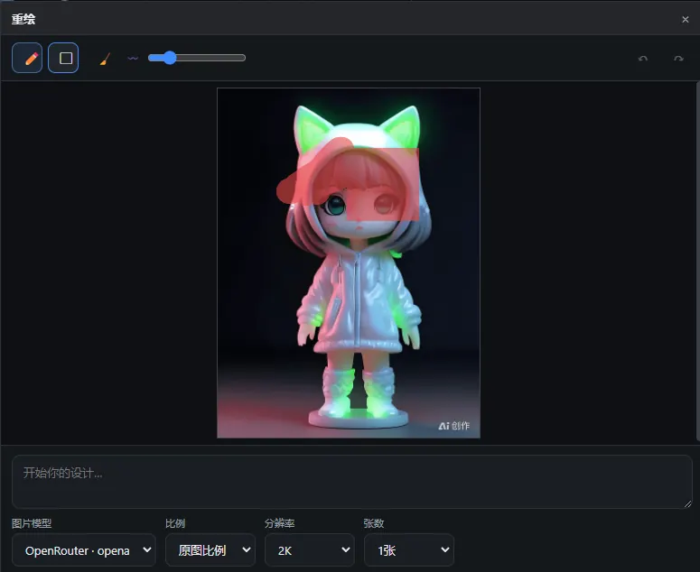

AI 对话面板
在对话里 @ 引用工程资产，Agent 调用 MCP 工具直接生成图片 / 视频 / 3D / 语音、编辑节点图、运行工作流并查看状态；多会话历史，模型可选任意已配置的文本提供商。
图片、视频、语音、3D 模型与空间世界，在一个桌面端里生成、沉淀、复用。节点图编排链路，一键工作流产出可复用资产；内置 MCP 工具服务，应用内 AI 与 Claude Code 等外部 Agent 都能直接动手。工程在本机，模型用你的 Key。







Works with your favorite models
Features
AI 不只陪你聊天——它能真正动手干活。资产、分镜、节点图、导演台与时间线共享同一份本地工程。
在对话里 @ 引用工程资产，Agent 调用 MCP 工具直接生成图片 / 视频 / 3D / 语音、编辑节点图、运行工作流并查看状态；多会话历史，模型可选任意已配置的文本提供商。
Claude Code / Codex 经 stdio 桥或 HTTP 直连操作工程：规划并落盘工作流、运行生成、读写资产与节点图。token 跨重启复用、操作审计、并发闸门。
MCP 接入教程内置分镜 / 动画、导演审核、系统创作技能，自动注入；也能放入自己的 SKILL.md。技能定流程，工具干执行。
使用手册 §5.6工作流、技能包与 MCP 服务一站安装；含脚本的条目逐条列出路径请你确认，越界执行只有「允许一次 / 拒绝」。
使用手册 §5.79 个工具覆盖「看清现状 → 写 bpy 建模 → 截图自查 → 导出 GLB」闭环；出站直连 addon，无需 uv / Python。
Blender 工具集文本 / 图片 / 视频 / 声音 / 音乐 / 音效 / 3D / 空间世界全模态节点；短剧分镜、游戏 UI、产品广告、电商带货等模板一键生成可复用宿主资产，双击 Dive 进入内图微调。
使用手册 §73D 摆姿与机位、AI 白模搭场景、20+ 基础几何体；截取站位图、录制动作视频，经方形口接到下游生成。支持 3D 模型与全景图输入、高斯泼溅渲染。
使用手册 §12World Labs Marble 从文本 / 参考图生成可漫游 3D 世界，导出网格或高斯泼溅后直接进导演台。
像素蛋糕式精修节点，16 组工具、五档强度；默认只处理对应部位，未请求区域保持原图像素。
导入与节点素材上轨编排，画中画叠加与视频轨转场，预览选中片段或整轨联播，导出成片。
使用手册 §10Agent Native
应用运行时会在 127.0.0.1 启动带 Bearer token 的本地工具服务。外部 Agent 与应用内 AI 对话共用同一套工具。
$ claude mcp add aiartengine -- node ./resources/mcp-bridge.mjs ✓ Added stdio MCP server aiartengine > 用「短剧分镜」模板做一集悬疑短片，主角参考 @女主设定图 ● workflow_list_presets 匹配模板：短剧分镜 ● workflow_plan 方案预览就绪 ● workflow_commit 宿主资产已落盘，界面同步出现 ● task_run 运行中 mcpTaskId=7f3a… ● task_status 剧本 ✓ 节拍 ✓ 9 宫格 ✓ 视频 …
Demo
同一条生成链路：参考图 → 角色设定图 → 选取图片 → 视频生成。

Workflow
每一步都可以手动搭，也可以交给 Agent 一次跑完。
选预设（含「短剧分镜」短视频模板）或用一句话描述需求，预览拓扑后创建可复用宿主资产；拖入画布即可接线运行。详见 使用手册 §7 与 短剧制作教程。
图片、视频、音色以 GUID 引用，支持素材包导入导出。
节拍拆解、9 宫格 / 4 宫格分镜表与导演审核，把叙事节奏落到画面。
文本 / 图像 / 视频 / 音色 / 音乐 / 音效 / 空间世界 / 3D 模型节点，对接 30+ 模型提供商并可配置多云对象存储。端口类型必须相同，选取节点只收列表口。
3D 摆姿与机位；截取站位图、录制动作视频，经方形口接到下游生成。
导入与节点素材上轨编排，预览选中片段或整轨联播，导出成片。
短剧模板自动生成 剧本 → 节拍 → 9 宫格 → 拼图 → 4 宫格 → 动态提示词 → 36 条视频；「剧集流水线」窗口集中操作，阶段重生成后下游自动失效、一致补跑。
Download
安装包内置运行时，无需另装 Node.js。启动后填入模型密钥即可开始创作。
推送 v* 标签由 GitHub Actions 自动构建多平台产物；也可以从源码运行：npm install && npm run dev（需要 Node.js 22+）。
Community
加入 QQ 群交流使用问题，或观看视频教程、提交 Issue。
开源、免费、本地优先。下载安装包，五分钟出第一条片。